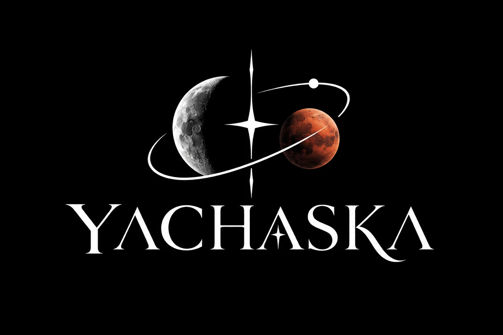

Saltar al cuento
YACHASKA
Sound on
Castellano
✕

Un cuento para escuchar con el scroll
Lo que la Luna vio
Empezar el cuento
↓
The real protagonists
Índice del cuento
Volver al inicio
Timeline
Los que se quedaron
Las lenguas de YACHASKA
Fuentes y datos NASA
Sobre YACHASKA
Descargar guion
AI
■
Stop audio